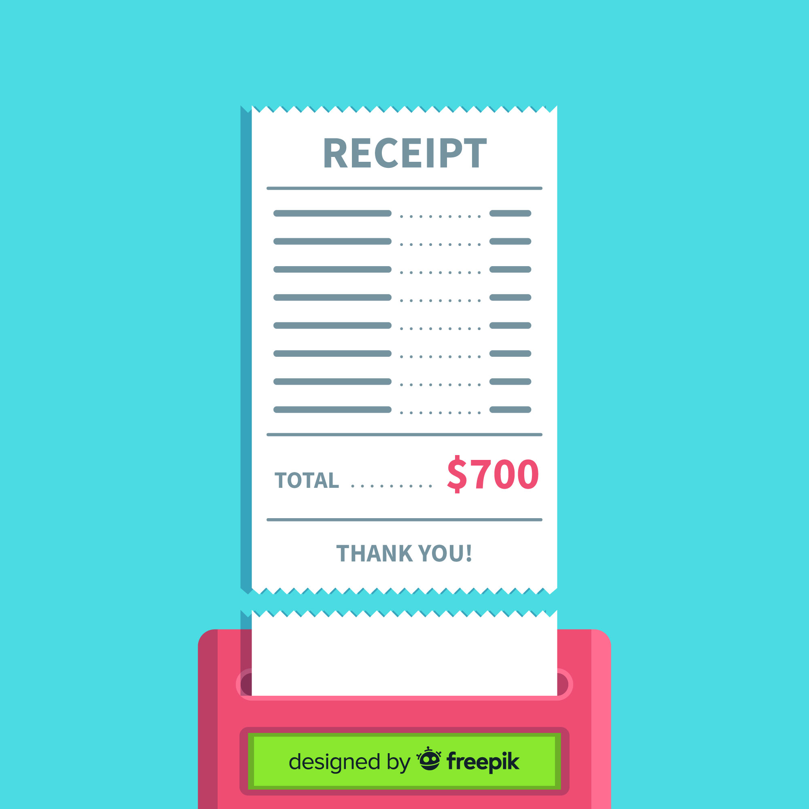

당신의 결과는?!
'INTJ'
팩폭머신 "데이터분석가형"

What's on my desk...

영수증
가계부 쓰려고 모아둠

고사양 컴퓨터
로딩시간 조금이라도 줄인다
- 마구잡이로 나열되어 있는 것들 혐오스럽다. 모든것은 대분류로 나눌수 있다는 믿음. 가끔 만나는 예외 상황에선... 아니.. 그런 상황 만나고 싶지 않다.
- "굳이?"라는 말을 들으면 가끔 흥분한다. 더 효율적이고 합리적이라면 당연히 그 방법을 사용하는게 옳지 않나? 이러다 꼰대들과 종종 싸운다.
- "너는 다 계획이 있구나...!" , 나한테 하는 소리 같다. 하루하루는 나에게 그저 전체 계획의 일부일 뿐이다. 하지만 가끔 모험을 하는 것도 좋다. “갑자기 바꾸자고?”로 반박하면 전투적으로 돌.변. 숨겨져 있던 승부사 기질이 발동한다.
- 소위 말하는 '눈이 높은 사람'. 날 만족시키긴 힘.들.껄?
- 둘중 하나다. 지나친 미니멀리스트, 정리벽 or 지나친 맥시멀리스트, 수집벽. 뭐가 되었든 둘 중 하나는 완벽하게 소화한다.
- 관종? 인정하기 싫지만 그렇다. 좋아하는 노래가 나오면 마음 속에서 나는 이미 최고의 춤꾼이다. 굳이 말하자면 내적 관종. 실제로 하긴 싫다.(할순 없다)
- 눈 감을 때 까지는 항상 무엇인가 생각하게 된다. 길을 걸어도 간판에 관심을 가지거나, 음식점에 가도 주문 프로세스를 생각하게 된다. 남들한테 말하면 피곤하게 산다 하지만, 재밌는걸...
- 뭐든 준비없이 갑작스럽게 하는것 너무 싫다. 일단 해보자라니? 생각할 시간이 피료해.... 준비된 사람에게만 기회가 찾아오는 것이다. (tmi. 영어 스피킹 시험을 봐야한다면, 즉각적인 답변을 요구하는 오픽보다 어느정도 외워서 할수 있는 토스 추천)
내 안에 데이터 분석가가 있다고?!
- 데이터 분석가는 수 많은 데이터 속에서 유의미한 결과물을 도출하는 업무을 담당한다. 의사결정하는 데 중요한 비중을 차지하는 역할이다.
- 자뭐든지 원리를 알아야 한다고 생각하는 당신. 기초적인 개념지식이 필수인 데이터 분석가는 당신에게 천직이 될 것이다.
- 이렇게 하면 잘 되지 않을까? 라는 애매한 말들은 필요 없다. 데이터를 봐라! 그곳에 정답이 있다.
- 절차상의 기초와 근본을 몹시 중시하는 당신. 그것 만으로도 데이터 분석가로서의 역량은 충분하다.
현실 데이터 분석가가 되려면?
- 기초 언어:python
- 필수 지식:데이터 베이스(SQL), 통계학
- 고급 스킬:Apache spark

♥우리는 운명: 블록체인 개발자

⊗우리는 에러: 네트워크 개발자